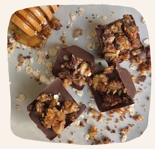
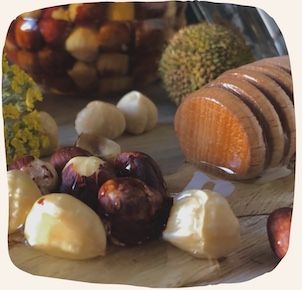
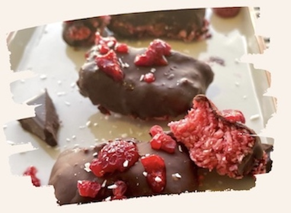
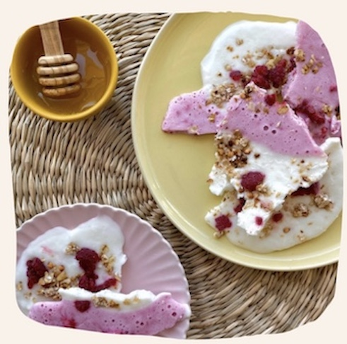
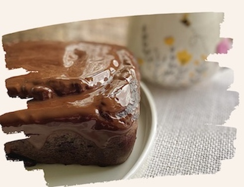
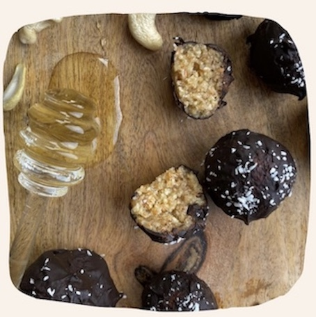

Bounty roze
Perberesit:
-40g arre kokosi e grire
-50g mjedra te ngrira (fruta pylli)
-1 luge gjelle vaj i arres se kokosit
-1 luge gjelle mjalte
-45g cokollate e zeze (>75%)
Pergatitja:
Ne nje mixer vendosni mjedrat e ngrira, arren e kokosit te grire, vajin e arres se kokosit dhe mjaltin. Pulsoni per pak minuta. Me duar ndani masen ne forma dhe vendosini ne ngrirje per 20 minuta. Ne kete moment shkrini cokollaten. Pas 20 minutash mbuloni format e krijuara me pare me cokollate dhe me disa copa mjedre si ne foto. Vendosni dhe njehere format ne ngrirje dhe pas 20 minutash jane gati.
Ju befte mire 🍫

Copa akulloreje
Shijoni keto dite te nxehta vape me kete embelsire e cila do vetem 5 minuta per tu pergatitur.
Perberesit:
- 40g kos
- 20g mjedra te ngrira
- 60g qumesht/krem arre kokosi
- 1 luge mjalte
Pergatitja:
Vendosni te gjithe ingredientet pervec mjedrave ne nje mikser. Gjysmen e kesaj mase vendoseni ne nje tepsi ku me pare keni vendosur leter gatimi. Gjysmen tjeter miksojeni me mjedrat dhe pastaj vendoseni prap ne tepsi. Zbukurojeni masen me granola ose mjedra. Futeni ne frigorifer per 30 minuta dhe mund ta konsumoni kur te deshironi.

Kek me cokollate
Ingredientet:
-300g panxhar te kuq (i zjere)
-120g mjell
-120g bajame te grire
-35g pluhur kakao
-120g mjalte
-1 luge caj fryres embelsirash
-160 ml/gr qumesht (ne perdorim qumesht bajame sepse eshte me pak kalori dhe me i shendetshem)
-50g gjalpe/vaj arre te kokosit
-2 lug caj vanilje (nese keni jo e domosdoshme)
-2 veze
-170g cokollate e zeze (70% ose siper)
Pergatitja:
Panxharin e kuq bejeni pure. Nese keni problem atehere hidhni qumeshtin per tju lehtesuar punen
Ngrohni soben ne 180g.
Lyeni me pak vaj te arres se koksit nje tepsi pjekjeje mesatare
Ne nje tas perzjeni mjellin, bajamen e grire, fryresin e embelsirave dhe kakaon
Ne nje tas tjeter perzjeni puren e panxharit te kuq, qumeshtin (nese nuk eshte perdorur per puren) gjalpi/vaj i arres se kokosit, mjaltin,vaniljen dhe vezet. Pasi eshte krijuar masa e njetrajtshme, hidheni ne tasin e pare dhe perzjeni te gjithe ingreditet sebashku.
Hidhni masen e krijuar ne tepsi per pjekje
Lereni te piqet per 45-55 minuta. Kjo varet nga furra qe ju keni. Per te pare nese embelsira eshte pjekur atehere shpojeni me nje thike ne mes. Nese thika del e paster atehere keku eshte gati
Lereni te ftohet per disa minuta.
Shkrini cokollaten e zeze. Ju mund te hidhni cokollaten e zeze ne nje tas dhe te vendosni kete tas nje nje tenxhere me uje te ngrohte derisa te shkrihet.
Hidhni cokollaten e shkrire siper kekur ne menyre te njetrajtshme.
Mund te servirni tani ose me vone sipas deshires
Ju befte mire 💛
⚠️ Idealja eshte qe keku te hiqet nga tepsia pasi duhet te kete ajrim nga poshte ne menyre qe avulli te dale nga keku. Nese mendoni se keku do te coptohet lijeni ne tepsi per pak kohe sa te ngurtesohet pak dhe pastaj hiqeni nga tepsia.

Energy balls
Perbersit:
-80g arra
-30g tershere e bluar
-20g banane
-10g mjalte
-20g cokollate e zeze
Pergatitja: Bluani arrat shume imet dhe bashkojini me tersheren e bluar. Hidhi bananen e shtypur dhe mjaltin. Perzjeni me dore derisa te keni nje brum te njome. Formoni topa te vegjel dhe mbulojeni me cokollate te cilen e keni shkrire me pare. Si perfundim hidhni pak arre kokosi te bluar per me zbukurim.
Ju befte mire!
Receta te tjera mund ti gjeni ne faqen e instagramit 💛